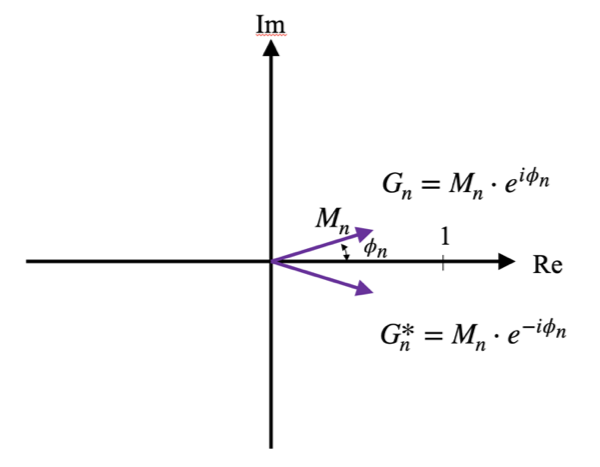
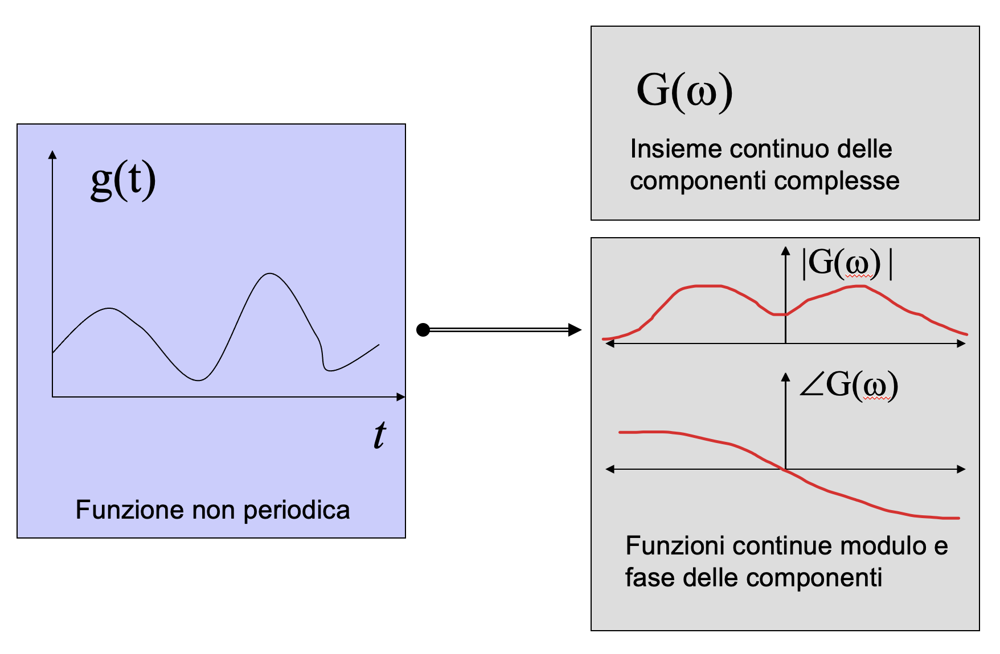

# secondo le equazioni:
`%ps%` <- function(A, B) {
(t(A) %*% B / length(A)) %>% as.numeric()
}
# ma anche, più efficientemente:
`%ps%` <- function(A, B) mean(A*B)Trasformazione nel dominio delle frequenze
1 Introduzione
Nella scienza delle misure stanno esplodendo due settori apparentemente non collegati: sensori al silicio, derivanti dalle tecnologie consolidate dei micro-chip, stanno soppiantando i tradizionali sensori (nonostante questi ultimi possiedano qualità metrologiche nettamente superiori); nuovi strumenti di elaborazione dati (PC, DSP, processori, micro-controllori, etc), sempre più potenti ed economici, stanno promuovendo l’impiego di algoritmi sempre più complessi (reti neurali, fuzzy sets, wavelets, etc). Si pensi ai moderni smartphone che contengono diversi sensori (una IMU, Inertial Measurement Unit che contiene accelerometri e giroscopi per la misura del moto, videocamere ed in alcuni casi anche telecamere a tempo di volo per la misura in 3 dimensioni) ed un processore estremamente potente a bordo.
I due aspetti, oltre che essere legati allo stesso fenomeno tecnologico, sono concorrenti nello stimolare il seguente approccio: utilizzare sensori di bassa qualità accoppiati a sistemi di acquisizione ed elaborazione complessa dei dati. In altre parole, le necessità di mercato stanno spingendo verso la ricerca di sensori che sfruttino le tecnologie consolidate della lavorazione del silicio che forniscono il duplice vantaggio della produzione in larga scala e quindi basso costo e quello della estrema miniaturizzazione ed integrazione con l’elettronica di condizionamento ed elaborazione segnali che consentono di impiegare algoritmi avanzati capaci di ottenere un’accuratezza adeguata anche da misure effettuate tramite sensori di bassa qualità. Si potrebbe citare la tecnologia dei sistemi embedded che, in maniera pervasiva, occupa gli spazi di vita quotidiana (con reti di sistemi di sorveglianza, sensori distribuiti per la domotica, etc) o industriale (reti di sensori per l’ottimizzazione della produzione e la diagnostica del processo produttivo giusto per citare alcuni esempi).
Si potrebbe aggiungere l’enorme sviluppo dell’intelligenza artificiale che si basa sulla raccolta dati, ovvero segnali generalmente variabili nel tempo. Non da ultimo è da considerare che per le applicazioni in ambito ingegneria meccatronica si ha a che fare con sistemi autonomi di cui si vuole controllare un certo numero di stati. A tale scopo è fondamentale la misura di tali stati che, se incogniti, ovviamente non sarebbero controllabili. Ebbene in ambito automatico gli stati sono associati a parametri di misura tempovarianti da cui occorre estrapolare delle informazioni tramite elaborazione di segnali tempovarianti.
In altre parole, l’elaborazione dei segnali acquisiti tramite reti di sensori distribuiti o da un sistema robotico, richiedono ad un ingegnere meccatronico la capacità di elaborarli. Questo per diversi scopi quali sintetizzare una variabile da controllare, ottenere informazioni legate alla diagnostica delle macchine o semplicemente per ridurre il rumore sovrapposto al segnale.
L’obiettivo di questa dispensa è quello di fornire i rudimenti essenziali per il “signal processing” che comprendono l’elaborazione nel dominio della frequenza tramite Trasformata di Fourier, il concetto e la stima tramite Taratura Dinamica della Funzione di Trasferimento, la Modellazione a Parametri Concentrati dei sistemi meccanici e conseguente estrapolazione delle Impedenze Generalizzate che consentono di costruire reti analoghe a quelle elettriche per la stima delle relazioni dinamiche che intervengono nei diversi punti del meccanismo.
2 Trasformata di Fourier
La trasformata di Fourier trasforma il segnale dal dominio del tempo al dominio della frequenza. In altre parole una funzione del tempo viene rappresentata, tramite opportuni coefficienti, in una funzione della frequenza evidenziando quali componenti armoniche compaiono nel segnale. Vi sono proprietà della trasformata di Fourier che ricorrono in altre trasformate quali la WT e la STFT (denominata anche trasformata di Gabor) e che sono essenziali per l’interpretazione dei risultati della trasformazione e di eventuali operazioni in frequenza quali filtraggi. Tali concetti sono la scomposizione di una funzione secondo una base di funzioni ortonormali e la reversibilità della trasformata.
2.1 Segnali tempovarianti, segnali discreti, vettori
Un segnale funzione del tempo s(t) rappresenta un segnale reale che varia in funzione del tempo senza soluzione di continuità. Un segnale discreto è un segnale campionato e quantizzato. Dunque rappresentabile tramite un vettore s = \{s(1), s(2), \dots, S(N)\}, dove n = 1\dots N sono gli N campioni acquisiti ad una certa frequenza di campionamento f_c.
Come vedremo quindi vi sarà una differenza tra la Trasformata di Fourier di un segnale tempovariante da quella di un segnale discreto. La prima ha un carattere ed una utilità simbolica, potremmo dire di concetto. La seconda pratica poiché tutti i segnali che si elaborano mediante processori sono discreti.
Nei prossimi sotto-paragrafi passeremo:
- dalla scomposizione di un vettore su di una base di versori ortonormali
- alla scomposizione di un segnale tempovariante periodico su una base di segnali ortonormali
- alla scomposizione di un segnale tempovariante non periodico su una base di segnali ortonormali
- alla scomposizione di un segnale discreto (ovvero un vettore) su una base di segnali discreti ortonormali (altri vettori).
Tutto ciò per comprendere cosa rappresentano le componenti del segnale nel dominio della frequenza (sia esso continuo o discreto) e, tramite il concetto di Funzione di Trasferimento, implementare le elaborazioni che si possono condurre in tale dominio. Tutto ciò consentirà di capire come gli strumenti di misura di grandezze tempovarianti si comportano con il misurando in base alle caratteristiche dinamiche riassunte proprio dalla loro funzione di trasferimento.
2.2 Scomposizione di un vettore su di una base di versori orto-normali
Per comprendere il concetto di scomposizione di un segnale tempovariante si può pensare al parallelo vettoriale: un vettore nel piano può essere scomposto secondo due direzioni mutuamente ortogonali. In tale maniera si ottiene la scomposizione mediante la semplice relazione del prodotto scalare :
\mathbf{v} = \alpha \mathbf{e}_1 + \beta \mathbf{e}_2 \tag{1}
dove \mathbf{e}_1 ed \mathbf{e}_2 sono i versori delle direzioni mutuamente ortogonali (\mathbf{e}_1 \cdot \mathbf{e}_2 = 0). Grazie alla proprietà di ortogonalità della base posso scrivere infatti:
\alpha = \mathbf{v}\cdot\mathbf{e}_1 = (\alpha \mathbf{e}_1 + \beta \mathbf{e}_2)\cdot \mathbf{e}_1 \\ \beta = \mathbf{v}\cdot\mathbf{e}_2 \tag{2}
che definisce l’operazione di scomposizione tramite la semplice operazione di prodotto scalare. L’Equazione 1 suggerisce di rappresentare il vettore in una maniera diversa, ovvero considerando le sole componenti lungo i due versori:
\mathbf{v}=[\alpha, \beta]
tale rappresentazione consente di effettuare considerazioni sul vettore solamente tramite le sue componenti nelle direzioni della base ortogonale di vettori \mathbf{e}_1 ed \mathbf{e}_2. Ovvero il vettore può essere ‘pensato’ come una ‘freccia’ nel piano oppure come insieme di componenti. Tale concetto è illustrato nella figura seguente.
La relazione di eguaglianza espressa in Equazione 1 garantisce la reversibilità, ovvero dati i parametri della trasformazione in componenti vettoriali lungo una coppia di direzioni ortogonali, è possibile risalire esattamente al vettore originario. Vedremo che non tutte le trasformazioni sono reversibili e che la reversibilità garantisce una corretta interpretazione delle operazioni effettuate nel dominio della trasformata. Introducendo ad esempio il concetto di filtro sulle componenti vettoriali come quell’operatore che fornisce la sola componente lungo \mathbf{e}_1 , si ottiene il valore del coefficiente \alpha che si sa essere esattamente corrispondente al vettore tolta la componente lungo l’altra direzione. Questa sembrerebbe una tautologia, ma, applicata alle trasformazioni di segnale, giustifica e fornisce la corretta interpretazione alle operazioni di manipolazione in frequenza quali il filtraggio: in una comune operazione di filtraggio passa-basso si ha la certezza di aver eliminato le componenti armoniche del segnale ad alta frequenza e di aver lasciato inalterate le rimanenti.
Dalla Equazione 1 e la Equazione 2 si ottiene:
\mathbf{v} = (\mathbf{v}\cdot\mathbf{e}_1) \mathbf{e}_1 + (\mathbf{v}\cdot \mathbf{e}_2) \mathbf{e}_2
che riassume i concetti prima espressi.
2.3 Scomposizione di un segnale tempovariante continuo su di una base di funzioni orto-normali
Per i segnali temporali vale un ragionamento analogo. Per semplicità considereremo lo sviluppo in serie invece della trasformata di Fourier in quanto da esso è poi possibile, tramite passaggio al limite, ricavare la formula della trasformata 1.
Una funzione periodica gode della proprietà che g(t)=g(t+nT) per ogni valore n intero. T è il periodo ed f_0 = 1/T è la frequenza fondamentale, mentre \omega = 2\pi f è la pulsazione. Essa può essere scomposta in serie di Fourier come segue.
Avendo un segnale s(t), rappresentabile nel dominio del tempo, si può definire lo sviluppo di Fourier tramite la relazione invertibile:
g(t)=\frac{1}{2}a_o + \sum_{n=1}^{\infty}a_n \cos(\omega_n t) + \sum_{n=1}^{\infty}b_n \sin(\omega_n t) \tag{3}
Dove \omega_n = 2\pi n f_0.
I coefficienti a_n e b_n vengono ricavati secondo le seguenti relazioni:
a_n = \frac{2}{T}\int_0^T g(\tau)\cos(\omega_nt)d\tau \\ b_n = \frac{2}{T}\int_0^T g(\tau)\sin(\omega_nt)d\tau \tag{4}
La Equazione 3 vuol dire scomporre la funzione g(t) secondo la base di funzioni ortogonali armoniche.
NOTA: la Equazione 3 corrisponde anche alla media delle componenti del prodotto elemento per elemento tra i due vettori.
2.4 Definizione di prodotto scalare tra funzioni continue e discrete
Il prodotto scalare tra segnali/funzioni periodiche si definisce come:
g(t)\bullet f(t)=\frac{1}{T}\int_0^T g(\tau)f^*(\tau)d\tau \tag{5}
dove con f^*(t) si intende la funzione complessa coniugata di f(t) che, nel caso di funzioni reali, coincide con se stessa.
Le stesse funzioni digitalizzate g_k ed f_k consistono nei due vettori \{g(1), g(2),\dots, g(N)\} e \{f(1), f(2),\dots, f(N)\} e quindi si definisce prodotto scalare tra i segnali digitalizzati:
g_k\bullet f_k=\frac{1}{T}\sum_{i=1}^N g_i f_i = \\ \{g(1), g(2),\dots, g(N)\} \bullet \{f(1), f(2),\dots, f(N)\}^T / N \tag{6}
Di seguito un esempio in R di scomposizione di un’onda quadra su una base ortogonale e sua ricomposizione sulla stessa base. Poi scomposizione e ricomposizione secondo la serie di Fourier. Si noti che un’onda quadra che parte con fronte di salita esattamente con il primo campione risulta essere scomponibile solo mediante sinusoidi per cui dimenticheremo le componenti coseno.
2.5 Esempio
Definiamo le funzioni prodotto scalare tra segnali digitalizzati e relativa norma. La prima funzione la definiamo come operatore %ps%:
Per la norma, definiamo la funzione norm_ps (dato che norm è già definita):
norm_ps <- function(A) sqrt(A %ps% A)
(1:5) %ps% (5:1)[1] 7norm_ps(1:5)[1] 3.316625Ora creiamo un segnale onda quadra (il segno dell’onda seno) campionato su 1000 punti tra 0 e 1, con frequenza 2 Hz:
f0 <- 2
fc <- 1000
Tm <- 1
dt <- 1/fc
sin_k <- function(x, f, k=1) sin(2*pi*f*k*x)
df <- tibble(
t = seq(dt, Tm, dt),
ys = sin_k(t, f0),
yq = sign(ys)
)
df %>%
pivot_longer(-t, names_to = "signal") %>%
ggplot(aes(x=t, y=value, color=signal)) +
geom_line() Calcoliamo le prime sette componenti della serie, secondo Equazione 6:
K <- 7
comps <- map_dbl(1:K, \(k) {
s <- sin_k(df$t, f0, k)
df$yq %ps% s/norm_ps(s)
}) %>% zapsmall()
comps[1] 0.9003045 0.0000000 0.3000699 0.0000000 0.1800040 0.0000000 0.1285337Infine approssimiamo l’onda quadra come somma delle prime 7 componenti:
df %>%
mutate(
yqk = reduce(1:K, \(acc, k) {
s <- sin_k(t, f0, k)
acc + comps[k] * s / norm_ps(s)
}, .init=0)
) %>%
pivot_longer(-t, names_to = "signal") %>%
ggplot(aes(x=t, y=value, color=signal)) +
geom_line()
Esercizi
- Partire da K=1 e incrementare di 1 alla volta. Cosa si nota?
- Con f_0=1 aumentare K di alcune centinaia e poi vicino a 500. Cosa succede? Esiste un numero K per cui il segnale ricomposto diviene pressoché perfettamente un’onda quadra?
- Mostrare in un grafico i coefficienti in funzione della frequenza.
- Con f_0 = 4; aumentate K fino ad ottenere un’onda quadra perfettamente ricomposta. Quanto vale K? C’è qualche nesso con il teorema di Nyquist?
- Aumentate ancora K, cosa succede? C’è, di nuovo, qualche nesso con il teorema di Nyquist? Che effetto sta subendo il segnale ricostruito?
Dall’esempio qui sopra in cui, per semplicità, ci siamo occupati di un caso in cui sono presenti solo componenti seno abbiamo compreso che lo sviluppo in serie di Fourier di un segnale tempovariante è dato dalla sommatoria pesata di componenti armoniche. Tali armoniche rappresentano una base di funzioni ortogonali ma non ortonormali.
Si ha infatti:
\begin{aligned} \sin(\omega_nt) \bullet \sin(\omega_nt) &= \frac{1}{T}\int_0^T \sin^2(\omega_nt)~dt = \frac{1}{T}\int_0^T\frac{1-2\cos(2\omega_nt)}{2}=\frac{1}{2} \\ \cos(\omega_nt) \bullet \cos(\omega_nt) &= \frac{1}{T}\int_0^T \cos^2(\omega_nt)~dt = \frac{1}{T}\int_0^T\frac{1+2\cos(2\omega_nt)}{2}=\frac{1}{2} \\ \cos(\omega_nt) \bullet \sin(\omega_nt) &= \frac{1}{T}\int_0^T \sin(\omega_nt)\cos(\omega_nt)~dt = \frac{1}{T}\int_0^T\frac{\sin(2\omega_nt)}{2}=0 \\ \cos(\omega_nt) \bullet \cos(\omega_kt) &= \frac{1}{T}\int_0^T \frac{\cos(\omega_nt+\omega_kt)\cos(\omega_nt-\omega_kt)}{2}~dt = 0,\quad n\neq k \\ \sin(\omega_nt) \bullet \sin(\omega_kt) &= \dots = 0 \\ \sin(\omega_nt) \bullet \cos(\omega_kt) &= \dots = 0 \end{aligned} \tag{7}
Per ottenere una scomposizione corretta occorre introdurre al denominatore dei coefficienti il quadrato del modulo (delle componenti la base di funzioni) quindi 1/2 che, portato a numeratore, spiega il fattore 2 nelle Equazione 4.
Passiamo ora a come rappresentare le funzioni in maniera analoga a quanto facciamo con i vettori. La Equazione 3 suggerisce infatti la rappresentazione di Figura 2, analoga a quella riportata in Figura 1.
Secondo quanto rappresentato in Figura 2 si potrebbe ragionare indifferentemente (grazie alla relazione di eguaglianza in Equazione 3 sulla funzione del tempo oppure su due funzioni (discrete) che rappresentano le componenti della scomposizione secondo Fourier.
Esiste però una rappresentazione più significativa sia per l’analisi segnali che per la soluzione di equazioni differenziali associate a sistemi lineari. Per determinare tale rappresentazione è necessario elaborare la Equazione 3 impiegando la formula di Eulero, ovvero i fasori:
e^{i\omega_nt} = \cos(\omega_nt) + i\sin(\omega_nt)
che porta ad esprimere le funzioni armoniche seno e coseno come:
\begin{aligned} \cos(\omega_nt)&=\frac{e^{i\omega_nt}+e^{-i\omega_nt}}{2} \\ \sin(\omega_nt)&=\frac{e^{i\omega_nt}-e^{-i\omega_nt}}{2i} \\ \end{aligned} le quali, sostituite nella Equazione 3, comportano:
\begin{aligned} g(t) &= \frac{1}{2}a_o + \sum_{n=1}^\infty a_n\frac{e^{i\omega_nt}+e^{-i\omega_nt}}{2} + \sum_{n=1}^\infty b_n\frac{e^{i\omega_nt}-e^{-i\omega_nt}}{2i} \\ g(t) &= \frac{1}{2}a_o + \frac{1}{2}\sum_{n=1}^\infty (a_n-ib)e^{i\omega_nt} + \sum_{n=1}^\infty (a_n+ib)e^{-i\omega_nt} \end{aligned} dalla quale, ponendo: G_0 = a_0/2 \\ G_n = (a_n-ib)/2 \\ G_{-n} = (a_n + ib_n)/2 = G^* \tag{8} si può scrivere: g(t)=G_0 + \sum_{n=1}^{\infty}G_n e^{i\omega_nt} + \sum_{n=-1}^{-\infty}G_n e^{i\omega_nt} cioè: g(t) = \sum_{n=-\infty}^{\infty}G_n e^{i\omega_nt} \tag{9}
Le componenti, ovvero quanto ognuna di tali funzioni pesa nella ricostruzione della funzione g(t) del tempo, si ricava in maniera analoga: G_n = g(t) \bullet e^{i\omega_nt}=\frac{1}{T}\int_0^T g(\tau)\left(e^{i\omega_n\tau}\right)^*~d\tau = \frac{1}{T}\int_0^Tg(\tau)e^{-i\omega_n\tau}~d\tau \tag{10}
Tale rappresentazione complessa, anche definita spettro del segnale, ha il vantaggio di consentire un’immediata valutazione della risposta di un sistema regolato da equazioni differenziali lineari conoscendo le componenti G_n del segnale in ingresso. La dimostrazione di ciò verrà riportata tra breve nel paragrafo “Funzione di Trasferimento sinusoidale”.
In questo caso la base di funzioni è sia ortogonale come nel caso delle armoniche pure, ma anche normale: e^{i\omega_nt}\bullet e^{i\omega_kt} = \frac{1}{T}\int_0^T e^{i\omega_n\tau}\left(e^{i\omega_k\tau}\right)^*~d\tau=\delta_{n,k} dove \delta_{n,k} è il delta di Kroneker. Nel caso in cui n = k basta seguire i seguenti passaggi: \begin{aligned} e^{i\omega_nt}\bullet e^{i\omega_kt} &= \frac{1}{T}\int_0^T e^{i\omega_n\tau}\left(e^{i\omega_k\tau}\right)^*~d\tau \\ &= \frac{1}{T}\int_0^T (\cos(\omega_n\tau) + i\sin(\omega_n\tau))~(\cos(\omega_n\tau)-i\sin(\omega_n\tau))~d\tau \\ &= \frac{1}{T}\int_0^T \cos^2(\omega_n\tau)~d\tau + \frac{1}{T}\int_0^T \sin^2(\omega_n\tau)~d\tau = \frac{1}{2} + \frac{1}{2} \\ &= 1 \end{aligned}
Nel caso in cui n\neq k la dimostrazione è banale se si considera l’ortogonalità delle funzioni armoniche.
È opportuno anche notare come le componenti G_{-n} e G_n danno vita a segnali armonici reali. Si nota infatti che:
G_n~e^{i\omega_nt} + G_{-n}~e^{-i\omega_nt} = G_n~e^{i\omega_nt} + G_n^*~(e^{i\omega_nt})^* = G_n~e^{i\omega_nt} + (G_n~e^{i\omega_nt})^* che, andando a comporre graficamente i due fasori, fornisce la seguente rappresentazione ed il segnale corrispondente s_n(t) = 2M_n\cos(\omega t+\phi_n)

La differenza tra l’espressione dell’equazione Equazione 3 e quella della Equazione 9 è che nel primo caso si tratta di coefficienti a_n e b_n reali, nel secondo di coefficienti complessi di cui, come è schematizzato in Figura 5, è possibile rappresentare le due funzioni modulo e fase in funzione della frequenza. Tali moduli e fasi, è facile convincersene tenendo conto dei passaggi che hanno condotto dalla Equazione 3 alla Equazione 11 e la rappresentazione dei fasori appena riportata, sono proprio i moduli e le fasi delle componenti armoniche che compongono il segnale s(t).
Rappresentiamo di nuovo i segnali in maniera analoga a quanto facciamo con i vettori. La Equazione 10 suggerisce ora la rappresentazione di Figura 5, analoga a quella riportate in figure Figura 2 e Figura 1.
La proprietà della reversibilità, valida per l’eguaglianza espressa nella Equazione 3, permette di effettuare operazioni di manipolazione in frequenza, quindi di antitrasformare tornando nel dominio del tempo avendo la certezza di non aver introdotto ulteriori elaborazioni a causa della doppia trasformazione. Un classico esempio è l’operazione di filtraggio passa-basso su segnali aventi una componente additiva di rumore in alta frequenza. In tale caso l’operazione di filtraggio passa-basso assicura l’eliminazione delle sole componenti in alta frequenza ipotizzate appartenenti al rumore.
Funzioni non periodiche possono essere immaginate come funzioni periodiche dal periodo T \rightarrow \infty e quindi la frequenza fondamentale f_0 \rightarrow 0. Le scomposizioni di Equazione 9 e Equazione 10 assumono la forma definita come Trasformata di Fourier:
\begin{aligned} g(t) &= \frac{1}{2\pi}\int_{-\infty}^\infty G(\omega)~e^{i\omega t}~d\omega \\ G(\omega) &= \int_{-\infty}^\infty g(t)~e^{-i\omega t}~dt \end{aligned} \tag{11} notare la convenzione impiegata per indicare la trasformata di una funzione g(t) con la lettera maiuscola, ovvero come G(\omega).
Di seguito la dimostrazione delle Equazione 11:
Se definiamo:
A_n := T \bullet G_n = \int_0^Tg(t)~e^{-i\omega_nt}~dt questo corrispondere semplicemente a modificare la definizione di prodotto scalare tra funzioni del tempo, che da f(t)\bullet g(t) = \frac{1}{T}\int_0^Tf(t)~g(t)^*~dt diventa: f(t)\bullet g(t) = \int_0^Tf(t)~g(t)^*~dt
Questo serve in quanto, dovendo tendere T\rightarrow\infty, si avrebbe uno 0 che moltiplica l’integrale. Questo viene quindi eliminato dalla definizione.
Ora facciamo tendere T\rightarrow\infty: si ottiene: A_{f=\frac{n}{T}} = A(\omega_n) = \int_{-\infty}^\infty g(t)~e^{-i\omega_nt}~dt Questa corrisponde alla seconda delle Equazione 11. In particolare, i coefficienti discreti A_n diventano una funzione continua della frequenza (o pulsazione) in quanto il passo tra frequenze successive diviene infinitesimo. Dunque, le funzioni che rappresentano le componenti della scomposizione (analoghe a quelle rappresentate in Figura 5) non saranno più funzioni discrete, bensì continue in quanto l’intervallo di spaziatura sulle ascisse (nel dominio della pulsazione) pari a 2\pi/T tende a zero.
Consideriamo ora la Equazione 9:
g(t) = \sum_{n=-\infty}^\infty G_n~e^{i\omega_nt} = \sum_{n=-\infty}^\infty \frac{A_n}{T}~e^{i\omega_nt} = \frac{1}{T} \sum_{n=-\infty}^\infty A~e^{i\omega_nt} se facciamo tendere T\rightarrow\infty, A_n diviene una funzione continua della pulsazione A(\omega) per cui la sommatoria diviene un integrale ottenendo: \int_{-\infty}^\infty A(\omega)~e^{i\omega t}~df = \int_{-\infty}^\infty A(\omega)~e^{i\omega t}\frac{2\pi}{2\pi}~df = \frac{1}{2\pi}\int_{-\infty}^\infty A(\omega)~e^{i\omega t}~d\omega Che corrisponde alla prima delle Equazione 11.

2.6 Alcune proprietà della trasformata di Fourier
La trasformata di Fourier gode delle proprietà elencate in Tabella 1.
| Proprietà | Relazione nel dominio del tempo e dello spettro |
|---|---|
| Linearità | a x(t) + b y(t)\rightarrow a X(\omega) + b Y(\omega) |
| Derivata | \dot x(t) \rightarrow i\omega X(\omega) |
| Integrale | \int_0^t x(\tau)~d\tau \rightarrow \frac{1}{i\omega}X(\omega) |
| Variazione scala | x(at)\rightarrow\frac{1}{|a|}X(\frac{\omega}{a} |
| Anticipo/Ritardo | x(t-\tau)\rightarrow X(\omega)~e^{-i\omega\tau} |
| Modulazione | x(t)~e^{-i\omega_0t}\rightarrow X(\omega-\omega_0) |
| Convoluzione | x(t) \otimes y(t)\rightarrow X(\omega)Y(\omega) |
| Prodotto | x(t)y(t)\rightarrow X(\omega)\otimes Y(\omega) |
2.7 Dimostrazione di alcune proprietà
Di seguito le dimostrazioni:
2.7.1 Linearità
\begin{aligned} \Im(a~x(t) + b~y(t)) &= \int_{-\infty}^\infty \left[a~x(t) + b~y(t)\right]~e^{-i\omega t}~dt \\ &= \int_{-\infty}^\infty a~x(t)~e^{-i\omega t}~dt + \int_{-\infty}^\infty b ~x(t)~e^{-i\omega t}~dt \\ &= a\int_{-\infty}^\infty x(t)~e^{-i\omega t}~dt + b\int_{-\infty}^\infty~x(t)~e^{-i\omega t}~dt \\ &= a~X(\omega) + b~Y(\omega) \end{aligned}
2.7.2 Derivata
Differenziando la trasformata inversa di X(\omega) rispetto al tempo (che equivale a derivare il segnale x(t)), si ottiene:
\begin{aligned} \frac{d}{dt}x(t) &= \frac{d}{dt}\left\{\frac{1}{2\pi}\int_{-\infty}^\infty X(\omega)~e^{i\omega t}~d\omega \right\} \\ &= \frac{1}{2\pi} \int_{-\infty}^\infty X(\omega)~\frac{d}{dt}\left(e^{i\omega t}\right)~d\omega \\ &= \frac{1}{2\pi} \int_{-\infty}^\infty \left[i\omega X(\omega)\right]~e^{i\omega t}~d\omega \\ &= \Im^{-1}\left\{i\omega X(\omega)\right\} \end{aligned}
2.7.3 Convoluzione
\begin{aligned} x(t) \otimes y(t) &= \int_{-\infty}^\infty x(\tau)y(t-\tau)~d\tau \\ \Im\left\{x(t) \otimes y(t)\right\} &= \int_{-\infty}^\infty\left[ \int_{-\infty}^\infty x(\tau)y(t-\tau)~d\tau \right]~e^{-i\omega t}~dt \\ &= \int_{-\infty}^\infty x(\tau)\left[ \int_{-\infty}^\infty y(t-\tau)~e^{-i\omega t}~dt\right]~d\tau \\ &= \int_{-\infty}^\infty x(\tau)\left[ \int_{-\infty}^\infty y(\xi)~e^{-i\omega \xi}~e^{-i\omega \tau}~d\xi\right]~d\tau \\ &= \int_{-\infty}^\infty x(\tau)~e^{-i\omega\tau} \left[ \int_{-\infty}^\infty y(\xi)~e^{-i\omega \xi}~d\xi\right]~d\tau \\ &= X(\omega)Y(\omega) \end{aligned}
Si noti che si è sostituita la variabile t con t-\tau nell’integrale ‘interno’ nella seguente maniera: \begin{aligned} \xi &= t - \tau \\ t &= \xi + \tau \\ d\xi &= dt \end{aligned}
Gli estremi di integrazione, essendo da -\infty a +\infty rimangono invariati. Questa proprietà è connessa con la soluzione di equazioni differenziali lineari che nel dominio del tempo corrisponde ad una operazione di convoluzione, nel dominio della frequenza ad una semplice moltiplicazione di funzioni della frequenza.
2.7.4 Ritardo/anticipo
\begin{aligned} \Im\left\{x(t\pm t_0)\right\} &= \int_{-\infty}^\infty x(t\pm t_0)~e^{-i\omega t}~dt \\ &= \int_{-\infty}^\infty x(t')~e^{-i\omega (t'\mp t_0)}~dt' \\ &= e^{\pm i\omega t_0} \int_{-\infty}^\infty x(t')e^{-i\omega t'}~dt' \\ &= X(\omega)~e^{\pm i \omega t_0} \end{aligned}
Questa proprietà evidenzia come un ritardo/anticipo di un segnale nel tempo ha influenza solo sulla fase dello spettro mentre ne lascia invariato il modulo (il fattore esponenziale con argomento immaginario ha modulo unitario e fase pari all’argomento stesso). Intuitivamente questo è ovvio in quanto le componenti dello sviluppo in serie saranno identiche come ampiezza mentre saranno ritardate/anticipate di t_0. Considerando una singola componente dello sviluppo inserire ad esempio: a_n\cos(\omega_n(t\pm t_0)) = a_n\cos(\omega_n t \pm \omega_n t_0) che evidenzia lo sfasamento proporzionale alla pulsazione moltiplicato per t_0.
2.8 Trasformazione di un’equazione differenziale in un’equazione algebrica nel dominio delle frequenze: Funzione di Trasferimento
Supponiamo di avere un sistema regolato da una equazione differenziale del secondo ordine:
\frac{d^2y(t)}{dt^2} + a\frac{dy(t)}{dt} + b~y(t) = c~u(t)
dove la u(t) è la forzante, ovvero l’ingresso, mentre la y(t) è la risposta, ovvero l’uscita.
Trasformando secondo Fourier la derivata prima e seconda dell’uscita, tenendo presente le proprietà enunciate in Tabella 1, si ottiene:
\frac{dy(t)}{dt}\rightarrow i\omega Y(\omega) e \frac{d^2y(t)}{dt^2}\rightarrow i\omega(i\omega Y(\omega)) e quindi la equazione differenziale diventa: (i\omega)^2Y(\omega) + i\omega a~Y(\omega) + b~Y(\omega) = c~U(\omega) che non è altro se non una equazione algebrica che può essere risolta rispetto all’uscita: Y(\omega) = \frac{c}{b + i\omega~a + (i\omega)^2}~U(\omega)
Tale relazione indica che la trasformata dell’uscita del sistema è pari alla trasformata dell’ingresso moltiplicata per una funzione anch’essa della frequenza (o pulsazione) che dipende solamente dalla forma dell’equazione differenziale che regola il sistema stesso, ovvero dai parametri a, b e c. Tale funzione complessa viene definita Funzione di Trasferimento.
Per convenzione la funzione di trasferimento viene indicata come H(\omega) per cui la precedente relazione si scrive in forma generale: Y(\omega) = H(\omega)U(\omega) \tag{12}
Dalla precedente è immediato ricavare la funzione di trasferimento come rapporto delle trasformate: H(\omega) = \frac{Y(\omega)}{U(\omega)} In generale l’uscita di un sistema lineare si può ottenere in due maniere:
- in frequenza: moltiplicazione della trasformata dell’ingresso per la funzione di trasferimento
- nel tempo: convoluzione tra ingresso ed antitrasformata della funzione di trasferimento (risposta del sistema ad un impulso ideale).
La funzione di trasferimento, oltre che esplicitamente ricavata dalla relazione differenziale data dalla fisica del fenomeno, può essere ricavata trasformando la risposta del sistema ad un impulso.
Per fare ciò introduciamo il concetto di delta di Dirac che modella un impulso ideale. Essa vale infinito per un tempo infinitesimo. Si definisce \delta(t-t_0) quella funzione che vale infinito per t = t_0 ed è nulla altrove. Se integrata tale funzione, avendo dominio infinitesimo ma valore infinito, risulta: \int_{-\infty}^\infty \delta(t-t_0)~dt = 1
Calcoliamone dunque la sua trasformata: \delta(t)\rightarrow \int_{-\infty}^\infty \delta(t)~e^{-i\omega t}~dt = \int_{-\infty}^\infty \delta(t)~e^{-i\omega (t=0)}~dt = \int_{-\infty}^\infty \delta(t) = 1\quad \forall\omega
Se quindi si impiega tale funzione come ingresso ad un generico sistema, si ottiene che U(\omega) = 1 per ogni frequenza e quindi Y(\omega) = H(\omega). Questo è il principale motivo per il quale chi si occupa di identificazione/caratterizzazione dei sistemi meccanici impiega martelletti strumentati per imporre degli impulsi sulle strutture e registrarne le vibrazioni nei diversi punti di interesse per ricavare la h(t) ovvero, tramite trasformata di Fourier, la H(\omega) che lega sollecitazioni nel punto di applicazioni dell’impulso alla risposta nel punto di registrazione delle vibrazioni. Torneremo su questo argomento nel terzo paragrafo.
Nel prossimo paragrafo evidenziamo un ulteriore punto di vista sulla funzione di trasferimento che può essere vista come quella funzione che in modulo indica l’attenuazione di una qualsiasi armonica venga posta in ingresso ed in fase il suo sfasamento. Da ciò prende anche il nome di funzione di trasferimento ‘sinusoidale’.
2.9 Funzione di trasferimento sinusoidale
Consideriamo un sistema dinamico lineare caratterizzato da una funzione di trasferimento H(\omega). Iniettiamo un ingresso puramente armonico di tipo sinusoidale, come schematizzato nel diagramma a blocchi di Figura 6.
Imponendo in ingresso u(t)=\sin(\omega_0 t) vogliamo determinare l’uscita y(t). Vedremo che si determina in maniera immediata dalla conoscenza di modulo e fase della funzione di trasferimento in corrispondenza della pulsazione dell’ingresso.
Per determinarlo passiamo attraverso le trasformate, dunque trasformiamo l’ingresso: u(t)=\sin(\omega_0 t) \otimes U(\omega) = \int_{-\infty}^\infty \sin(\omega_0 t)~e^{-i\omega t}~ dt = \\ = \int_{-\infty}^\infty \sin(\omega_0 t)(\cos(\omega t) - i\sin(\omega t)) ~dt
Tale trasformata vale chiaramente zero \forall\omega \neq\pm\omega_0 grazie alla proprietà di ortonormalità delle funzioni armoniche. Per \omega = \omega_0 ed \omega = -\omega_0 occorre invece calcolarne i valori.
\begin{aligned} U(\omega_0) &= \int_{-\infty}^\infty \sin(\omega_0 t)(- i\sin(\omega_0 t)) ~dt = -i\int_{-\infty}^\infty \sin^2(\omega_0 t)~dt \\ &= -i \int_{-\infty}^\infty \frac{1-\cos(2\omega_0 t)}{2}~dt = -\frac{i}{2} \cdot\infty \\ U(-\omega_0) &= \int_{-\infty}^\infty \sin(\omega_0 t)(i\sin(\omega_0 t)) ~dt = i\int_{-\infty}^\infty \sin^2(\omega_0 t)~dt \\ &= i \int_{-\infty}^\infty \frac{1-\cos(2\omega_0 t)}{2}~dt = \frac{i}{2} \cdot\infty \\ \end{aligned}
Volendo rappresentare lo spettro della funzione seno si ha dunque il grafico in Figura 7.
Globalmente la trasformata dell’ingresso si può scrivere quindi come somma di due delta di Dirac: U(\omega) = \frac{i}{2}\delta(\omega + \omega_0)- \frac{i}{2}\delta(\omega-\omega_0) dove con delta di Dirac \delta(\omega-\omega_0) si intende la funzione che vale infinito per \omega=\omega_0) ed è nulla altrove. Se integrata, tale funzione, avendo dominio infinitesimo ma valore infinito, risulta \int_{-\infty}^\infty\delta(\omega-\omega_0)~d\omega. Se come argomento dell’integrale si ha una generica funzione H(\omega), risulta \int_{-\infty}^\infty H(\omega)\delta(\omega-\omega_0)~d\omega = H(\omega_0). Questo semplicemente perché l’infinito rappresentato dalla delta di Dirac moltiplica il valore della funzione in corrispondenza della pulsazione \omega_0 facendo assumere al prodotto un valore infinito di modulo H(\omega_0) che, integrato su di un dominio infinitesimo produce un risultato finito pari al valore assunto dalla funzione in corrispondenza della pulsazione \omega_0). A questo punto è immediato determinare il valore della trasformata dell’uscita: Y(\omega) = H(\omega)U(\omega) = H(\omega) \left( \frac{i}{2}\delta(\omega + \omega_0) - \frac{i}{2}\delta(\omega - \omega_0) \right) che porta ad avere una somma di due delta con moduli pari al valore della funzione di trasferimento in corrispondenza dei due infiniti: Y(\omega) = H(-\omega_0)\frac{i}{2}\delta(\omega+\omega_0) - H(\omega_0)\frac{i}{2}\delta(\omega-\omega_0)
La funzione di trasferimento può essere scomposta in modulo e fase: H(\omega) = M(\omega)~e^{-i\Phi(\omega)} per cui si ha: Y(\omega)=M(\omega_0)\frac{i}{2}\delta(\omega + \omega_0)~e^{-i\Phi(\omega_0)} - M(\omega_0)\frac{i}{2}\delta(\omega - \omega_0)~e^{-i\Phi(\omega_0)} In cui si sono semplicemente sostituiti i valori e considerata la proprietà dello spettro si un segnale reale: modulo simmetrico e fase antisimmetrica, secondo la Equazione 8.
Considerando l’equazione di Eulero: e^{i\Phi(\omega_0)}=\cos(\Phi(\omega_0)) + i\sin(\Phi(\omega_0)) si ottiene, dopo semplice manipolazione: \frac{Y(\omega)}{M(\omega_0)} = \cos(\Phi(\omega_0)) \left[ \frac{i}{2}\delta(\omega+\omega_0) - \frac{i}{2}\delta(\omega-\omega_0) \right] + \\ + \sin(\Phi(\omega_0)) \left[ \frac{1}{2}\delta(\omega+\omega_0) + \frac{1}{2}\delta(\omega-\omega_0) \right]
Del primo termine sappiamo immediatamente calcolare l’antitrasformata avendo appena calcolato la trasformata della funzione seno. Il secondo termine è anche immediatamente antitrasformabile in quanto vale: \cos(\omega_0 t) = \frac{1}{2}\delta(\omega+\omega_0) + \frac{1}{2}\delta(\omega-\omega_0)
In definitiva, quindi: y(y) = M(\omega_0)\cos(\Phi(\omega_0)) \sin(\omega_0 t) + M(\omega_0)\sin(\Phi(\omega_0)) \cos(\omega_0 t) ovvero: y(t) = M(\omega_0)\sin(\omega_0t + \Phi(\omega_0)) Che esprime il fatto che se si pone in ingresso ad un sistema regolato da equazioni differenziali lineari un ingresso armonico di modulo unitario e pulsazione \omega_0, l’uscita sarà un’armonica di pari pulsazione \omega_0 ma di modulo pari al modulo della funzione di trasferimento H(\omega_0) calcolata per la pulsazione \omega_0 e sfasata della fase della funzione di trasferimento \Phi(\omega_0)) calcolata per la stessa pulsazione \omega_0.
A tale risultato era possibile giungere semplicemente considerando la Equazione 12: \begin{aligned} Y(\omega) &= H(\omega)U(\omega)=M_H(\omega)~e^{i\Phi_H(\omega)} M_U(\omega)~e^{i\Phi_U(\omega)} \\ &= M_H(\omega) M_U(\omega)~e^{i(\Phi_H(\omega) + \Phi_U(\omega))} \end{aligned} che esprime appunto il fatto che i moduli si moltiplicano e le fasi si sommano.
2.10 Rappresentazione dello spettro di un segnale campionato mediante DFT
Nell’elaborazione dei segnali occorre passare a segnali di tipo discreto poiché i dati acquisiti dal modulo di acquisizione digitale e registrati sono delle sequenze finite di valori quantizzati, ovvero dei vettori come già visto. Dunque, nell’elaborazione computerizzata dei segnali non si manipola un segnale s(t), ma un vettore [s(1), s(2), \dots, s(N)] di N valori s(n) campionati alla frequenza di campionamento f_c = 1/T_c.
La Trasformata di Fourier Discreta (DFT) è formulata così: s(n)\rightarrow S(k) = \sum_{n=1}^N s(n)~e^{-\frac{2\pi i}{N}k(n-1)}\quad k=0, 1, \dots, N-1
Come era prevedibile, ciascun elemento S(k) della trasformata del segnale discreto, ovvero del vettore, si può calcolare come prodotto di due vettori: S(k) = [s(1), s(2), \dots, s(N)]\cdot[1, e^{-\frac{2\pi i}{N}k}, e^{-\frac{2\pi i}{N}k~2},\dots, e^{-\frac{2\pi i}{N}k~N}]^T Ovvero tra il vettore corrispondente al segnale discreto ed uno dei vettori corrispondenti alla base (uno dei segnali discreti complessi e^{-\frac{2\pi i}{N}kn} base della scomposizione). Anch’essi vettori ortonormali, in altre parole facente parte dei versori nello spazio \mathbb R^N. Si noti che per ricavare le componenti tramite prodotto scalare definito in Equazione 5 manca la normalizzazione per N.
La DFT la si può scrivere evidenziando la corrispondenza tra i vettori nel dominio del tempo discreto s(n) e della frequenza discreta, ovvero lo spettro S(k): [s(1), s(2), \dots, s(N)]\rightarrow [S(1), S(2), \dots, S(N)]
Si noti come lo spettro [S(1), S(2), \dots, S(N)] abbia lo stesso numero di campioni N del segnale [s(1), s(2), \dots, s(N)].
È importante ora capire: cosa rappresentano i diversi coefficienti S(k)? A che frequenze corrispondono i vari k?
Consideriamo S(1) che corrisponde a frequenza nulla: K parte da 0. Stiamo moltiplicando per un segnale costante che possiamo immaginare come un segnale armonico avente periodo infinito (inverso della frequenza: 1/0 = +\infty).
Esso è pari a: S(1)=S(k=0)=\sum_{n=1}^N s(n)~e^0 = \sum_{n=1}^N s(n) Quindi è pari alla somma dei campioni del segnale. Si noti che si ha quindi S(1) = N \bar{s}, sove \bar s è la media del segnale sull’intervallo considerato.
Consideriamo S(2): S(2)=S(k=1)=[s(1), s(2), \dots, s(N)]\cdot[1, e^{-\frac{2\pi i}{N}}, e^{-\frac{2\pi i}{N}\cdot 2},\dots, e^{-\frac{2\pi i}{N}\cdot N}]^T
Quindi S(2), divisa per N, fornirà la componente del segnale s(n) lungo la prima armonica. Si noti infatti che l’esponenziale complesso ha fase che parte da 0 ed arriva a 2\pi esattamente in N campioni eseguendo quindi un solo periodo o giro per il fasore corrispondente. Il periodo totale di campionamento è pari a (N-1)T_c
Di conseguenza la frequenza corrispondente sarà \frac{1}{(N-1)T_c}.
Consideriamo S(3): S(3)=S(k=3)=[s(1), s(2), \dots, s(N)]\cdot[1, e^{-\frac{4\pi i}{N}}, e^{-\frac{4\pi i}{N}\cdot 2},\dots, e^{-\frac{4\pi i}{N}\cdot N}]^T
S(3), diviso sempre per N è la componente del segnale s(n) lungo la seconda armonica. Si noti che l’esponenziale complesso ha fase che parte da 0 ed arriva a 4\pi esattamente in N campioni eseguendo quindi due periodi, o giri, per il fasore corrispondente. Di conseguenza la frequenza corrispondente sarà \frac{2}{(N-1)T_c}. E così via.
Continuando in questo modo, l’ultimo valore dello spettro corrisponderebbe alla frequenza 1/T_c pari alla frequenza di campionamento f_c. Ma sappiamo che ciò non è possibile. Il teorema di Nyquist assegna infatti significato alla sola banda 0\div f_c/2. è questo il motivo per cui dalla frequenza di Nyquist (f_c/2) in poi si ha una ripetizione dello spettro tramite le componenti negative che, assieme alle corrispondenti positive, consentono di ottenere le armoniche come segnali reali.
Si veda la Sezione 3.1.1 per un esempio.
2.11 Tabella riassuntiva
| Oggetto | Sviluppo in serie o scomposizione dell’oggetto | Calcolo coefficienti |
|---|---|---|
| Vettore \mathbf v | \mathbf{v} = \alpha \mathbf{e}_1 + \beta \mathbf{e}_2 dove \mathbf e_1, \mathbf e_2 sono i versori di una base ortogonale |
\alpha = \mathbf{v}\cdot\mathbf{e}_1 \beta = \mathbf{v}\cdot\mathbf{e}_2 |
Segnale periodico g(t) nel tempo continuo (sviluppo di Fourier) Segnale periodico g(t) nel tempo continuo (sviluppo di Fourier) |
g(t)=\frac{a_0}{2}+\sum_{n=1}^\infty a_n\cos(\omega_nt) +\sum_{n=1}^\infty b_n\sin(\omega_nt) dove \omega_n=2\pi nf_0 |
a_n=\frac{2}{T}\int_0^Tg(t)\cos(\omega_nt)~dt b_n=\frac{2}{T}\int_0^Tg(t)\sin(\omega_nt)~dt |
| Segnale periodico g(t) nel tempo continuo (sviluppo mediante fasori) | g(t)=\sum_{n=-\infty}^\infty G_n~e^{i\omega_n t} dove \omega_n = 2\pi n f_0 |
G_n=\frac{1}{T}\int_0^T g(t)~e^{-i\omega_nt}~dt |
| Segnale generico, NON periodico nel tempo continuo | g(t)=\frac{1}{2\pi}\int_{-\infty}^\infty G(\omega)~e^{i\omega t}~dt | G(\omega=\frac{1}{T}\int_0^T g(t)~e^{-i\omega_nt}~dt |
| Segnale digitale s(n)=[s(1),s(2),\dots,s(N)] | s(n)=\frac{1}{N}\sum_{k=0}^{N-1}S(k)~e^{\frac{2\pi i}{N}k(n-1)} n=1, 2, \dots, N |
S(K)=\sum_{n=1}^{N}s(n)~e^{-\frac{2\pi i}{N}k(n-1)} k=0, 1, \dots, N-1 |
Notare che per segnali digitali, campionati in un intervallo di tempo finito e quantizzati, non ha senso chiedersi se siano periodici o meno. Semplicemente non lo sappiamo. In ogni caso la minima armonica contenuta vale 1/(intervallo di acquisizione) e ci saranno le sue multiple in modo analogo ai segnali periodici nel tempo continuo.
3 La trasformata di Fourier rapida
Come visto sopra, la trasformata di Fourier scompone una serie temporale nelle sue frequenze costituenti, rappresentandola cioè come una somma di oscillazioni armoniche.

L’algoritmo FFT è una procedura computazionale molto efficiente per calcolare la trasformata di Fourier discreta di un segnale, o serie temporale, campionato. Se x è la serie storica e X è la sua trasformata:
X(k) = \sum_{n=1}^N x(n) e^{-j2\pi k n/N}
dove k=1, 2, \dots, N-1 e N è il numero di osservazioni campionate.
Si noti che la trasformata di un segnare reale è una serie di numeri complessi, la cui parte reale rappresenta l’intensità mentre la parte immaginaria rappresenta la fase.
3.1 Esempio
3.1.1 Creiamo una serie di dati
Creiamo una serie temporale ottenuta combinando sinusoidi con diversi parametri di ampiezza w, frequenza f e fase \phi. Per farlo definiamo una funzione di supporto:
signal <- function(t, pars, rad=FALSE) {
stopifnot(is.data.frame(pars))
if (!rad) {
pars$phi <- pars$phi/180*pi
pars$f <- 2*pi*pars$f
}
with(
pars,
map_dbl(t, \(t) map_vec(seq_along(w), ~ w[.]*sin(t*f[.]+phi[.])) %>% sum())
)
}Ora creiamo un segnale composto da tre sinusoidi,
pars <- tibble(
w = c(1, 0.2, 0.5, 0.25),
f = c(4, 10, 2, 30),
phi = c(0, 0, 0, 90)
)| w (-) | f (Hz) | \phi (°) |
|---|---|---|
| 1.00 | 4 | 0 |
| 0.20 | 10 | 0 |
| 0.50 | 2 | 0 |
| 0.25 | 30 | 90 |
s <- tibble(
t = seq(0, 10, length.out = 5000),
y = signal(t, pars, rad=FALSE) + rnorm(length(t), 0, 0.5) + 1.25
)
s %>%
ggplot(aes(x=t, y=y)) +
geom_line(linewidth=0.1)3.1.2 Spettrogramma mediante FFT
R mette a disposizione la funzione fft() nella libreria base:
s.fft <- fft(s$y)
summary(s.fft) Length Class Mode
5000 complex complex Quindi la trasformata è un vettore complesso con lo stesso numero di osservazioni del segnale iniziale.
s %>%
mutate(
i = 1:n(),
fft = fft(y),
intensity = Mod(fft),
phase = Arg(fft)/pi*180
) %>%
ggplot(aes(x=i, y=intensity)) +
geom_line()Cosa c’è in ascissa? La trasformata copre un intervallo di frequenze [0, N/T], con T=N\delta t la durata complessiva del segnale. L’intensità dei picchi (cioè il modulo del valore complesso) corrisponde invece all’ampiezza delle componenti, scalata con il numero di osservazioni:
s.fft <- s %>%
mutate(
i = 1:n()-1,
fft = fft(y),
intensity = Mod(fft) / n() * 2,
phase = Arg(fft)/pi*180,
f = i / max(t)
) %>%
slice_head(
n = nrow(.)/2
)Messa in grafico otteniamo lo spettro in frequenza del segnale:
s.fft %>%
ggplot(aes(x=f, y=intensity)) +
geom_vline(xintercept=pars$f, color="red", linewidth=0.25) +
geom_line(linewidth=0.2) +
geom_point(size=0.5) +
coord_cartesian(xlim=c(0, 35)) +
labs(x="frequenza (Hz)", y="intensità (-)")pars3.2 Finestre
Consideriamo un segnale sinusoidale privo di disturbo, campionato per un tempo pari a 10 volte il suo periodo più mezzo periodo:
pars <- tibble(
w = c(1),
f = c(10),
phi = c(0)
)
s <- tibble(
t = seq(0, 1+1/pars$f/2, length.out = 512),
y = signal(t, pars, rad=FALSE) + rnorm(length(t), 0, 0.0)
)
s %>%
ggplot(aes(x=t, y=y)) +
geom_line()Ora osserviamo la FFT
s %>%
mutate(
f = 0:(n()-1)/max(t),
fft = fft(y),
intensity = Mod(fft) / n() * 2,
phase = Arg(fft)/pi*180
) %>%
slice_head(n=nrow(.)/2) %>%
ggplot(aes(x=f, y=intensity)) +
geom_vline(xintercept=10, linetype=2, color="red") +
geom_spoke(aes(angle=pi/2, y=0, radius=intensity), linewidth=0.2) +
geom_point(shape=21) +
coord_cartesian(xlim=c(0, 100))Come si vede, la FFT è allargata, in maniera inattesa, attorno al picco a 10 Hz: come mai?
Bisogna ricordare che la FFT assume che il segnale sia periodico e campionato per un numero di cicli interi. Cioè è come se il segnale si ripetesse all’infinito uguale a se stesso dopo (e prima) la fine del campionamento. Nel nostro caso, quindi, è come se il segnale fosse come il seguente:
s %>% mutate(step="A") %>%
bind_rows(mutate(s, step="B", t=t+last(t))) %>%
ggplot(aes(x=t, y=y, color=step)) +
geom_line()È evidente come ogni \Delta T=1.05+0.05 secondi ci sia un evento con una discontinuità sulla derivata del segnale, che si ripete periodicamente. Cioè si ha un evento con un ampio contenuto in frequenza (per ottenere uno spigolo bisogna sommare molte componenti!) attorno alla frequenza pari all’inverso della durata del campionamento. È altrettanto evidente come, ad eccezione del caso in cui la durata del campionamento è un multiplo esatto di tutti i periodi contenuti nel segnale, ciò significa che la parte a bassa frequenza dello spettro sarà sempre sporcata alla frequenza pari all’inverso della durata del campionamento.
Esercizio
Provare a modificare i parametri di frequenza e durata del campionamento per osservare il risultato.
Per mitigare questo problema si ricorre alla finestratura (windowing) del segnale: si moltiplica il segnale per una funzione che va a zero, o quasi, all’inizio e alla fine del campionamenti. Esistono diverse funzioni di finestratura, le più utilizzate sono quella di Hamming e quella di Hann.
Il pacchetto gsignal le mette a disposizione entrambi (ed altre):
s %>%
mutate(
i = 1:n(),
win = hann(n()),
yw = y * win
) %>%
ggplot(aes(x=i)) +
geom_line(aes(y=win), color="red", linetype=2) +
geom_line(aes(y=-win), color="red", linetype=2) +
geom_line(aes(y=yw))A questo punto il segnale è ovviamente perfettamente periodico e, se calcoliamo la FFT del segnale modificato con la finestra di Hann, otteniamo:
s %>%
mutate(
f = 0:(n()-1)/max(t),
yw = hann(n()) * y,
fft = fft(yw),
intensity = Mod(fft) / n()*2,
phase = Arg(fft)/pi*180
) %>%
slice_head(n=nrow(.)/2) %>%
ggplot(aes(x=f, y=intensity)) +
geom_vline(xintercept=10, linetype=2, color="red") +
geom_spoke(aes(angle=pi/2, y=0, radius=intensity), linewidth=0.2) +
geom_point(shape=21) +
coord_cartesian(xlim=c(0, 100))Possiamo osservare come il contributo della durata del campionamento sia pressoché svanito, anche se risulta ovviamente ridotta l’intensità dei picchi a 10 Hz, dato che l’ampiezza media del segnale è anch’essa ridotta.
Esercizio
Provare a cambiare funzione finestra utilizzando hamming() o una delle altre finestre messe a disposizione da gsignal.
Note
F. Angrilli, Misure Meccaniche e Termiche, Cedam 2005↩︎